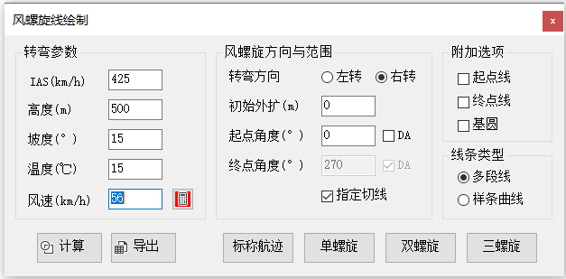
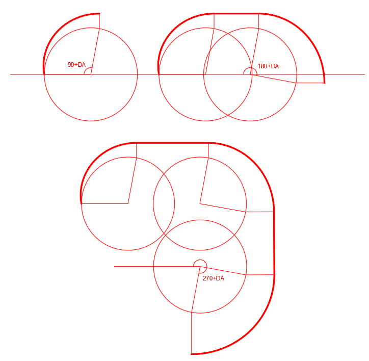

功能简介
【风螺旋】用于绘制风螺旋（Wind Spiral）——航空器在转弯过程中受到风的影响形成的转弯区最大外边界曲线。软件中支持单螺旋、双螺旋、三螺旋（带公切线）以及标称航迹，可设置转弯方向与多种附加显示选项。
界面预览

界面元素
| 分区 / 控件 | 说明 |
|---|---|
| 转弯参数 | 指示空速（IAS）、高度、坡度角、风速、ISA 温度偏差。 |
| 风螺旋方向与范围 | 左转 / 右转选择，及偏流角（DA）等范围选项。 |
| 单螺旋 / 双螺旋 / 三螺旋（按钮） | 绘制对应数量的风螺旋线（双螺旋、三螺旋自带公切线）。 |
| 标称航迹（按钮） | 指定起点、转弯点、转弯终点，绘制转弯标称航迹。 |
| 计算（按钮） | 计算转弯率、转弯半径等参数，输出到命令行窗口。 |
| 附加选项 | 绘制基圆、起点线、终点线等辅助线，指定切线、指定螺旋线线条类型等功能。 |
操作步骤
- 命令行输入
Y01_风螺旋打开窗口。 - 填写转弯参数（IAS / 高度 / 坡度 / 风速 / 温度偏差）。
- 选择转弯方向（左转 / 右转），勾选需要的附加选项。
- 点击【单螺旋】/【双螺旋】/【三螺旋】或【标称航迹】，按提示在图面指定位置点进行绘制。
参数校验：转弯参数输入有误时会提示“参数输入有误，请检查”，此时不会绘制。
应用案例
